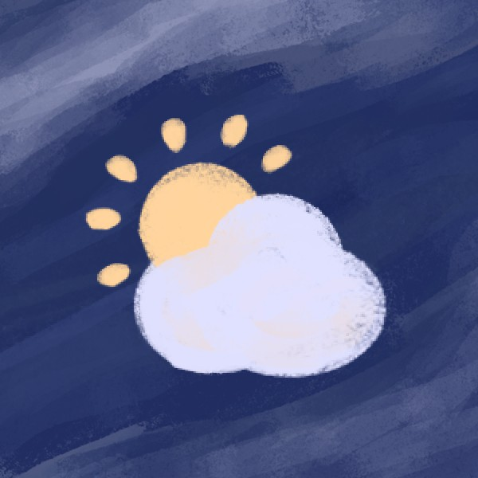

LegmaMiteo
Una stazione meteo da esterno che misura, archivia e mostra i dati in una dashboard.
Un ESP32 legge i sensori e invia le misure via MQTT. Telegraf le raccoglie e le scrive in un database InfluxDB, mentre Grafana le mostra in pannelli separati, per esempio umidità e pressione. Una scheda SD conserva una copia locale dei dati e tutto il lato server gira in container Docker. La stazione è pensata per stare all'aperto da sola, con pannello solare e batteria LiFePO4.